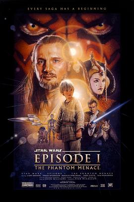

星球大战前传1：幽灵的威胁 / Star Wars: Episode I - The Phantom Menace
又名：星球大战第一集：幽灵的威胁 / 星球大战前传I：魅影危机(港) / 星际大战首部曲：威胁潜伏(台) / 星战前传之魅影危机
1999年的电影相当棒了
作品信息
| 导演 | 乔治·卢卡斯 |
| 编剧 | 乔治·卢卡斯 |
| 主演 | 连姆·尼森 / 伊万·麦克格雷格 / 娜塔莉·波特曼 / 杰克·洛伊德 / 伊恩·麦克迪阿梅德 / 潘妮拉·奥古斯特 / 奥利弗·福德·戴维斯 / 阿梅德·贝斯特 / 安东尼·丹尼尔斯 / 肯尼·贝克 / 弗兰克·奥兹 / 特伦斯·斯坦普 / 布耐恩·布莱塞得 / 安德鲁·斯考姆比 / 休·夸希 |
| 类型 | 动作 / 科幻 / 冒险 |
| 制片国家/地区 | 美国 |
| 语言 | 英语 |
| 上映日期 | 1999-11-05(中国大陆) / 1999-05-19(美国) / 2012-02-10(美国) |
| 片长 | 136分钟 |
| IMDb | tt0120915 |
说过什么
2021-02-13 14:16:59
看过 · 时间来自广播，短评来自标记页
1999年的电影相当棒了
最后一次看到是 2026-08-01T11:05:23+10:00 · 豆瓣原页